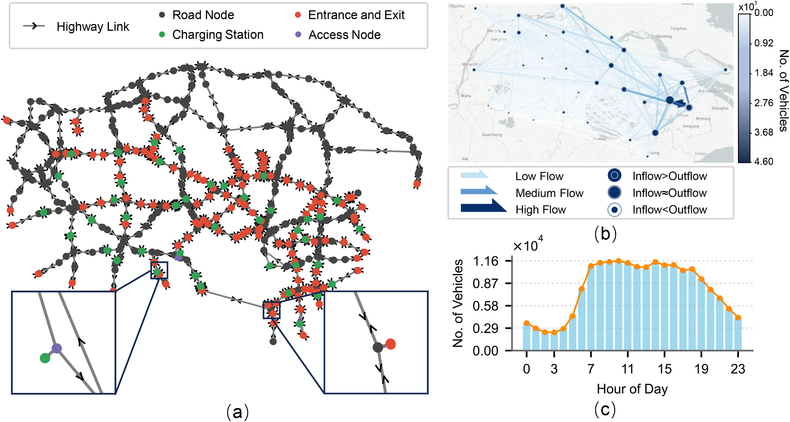

Agent-based modeling of resilience and cascading failures in highway charging networks
Transportation Research Part D · 2026
A data-driven agent-based model examining resilience patterns and the propagation of cascading failures in highway charging networks.
Transport–energy / Network resilience